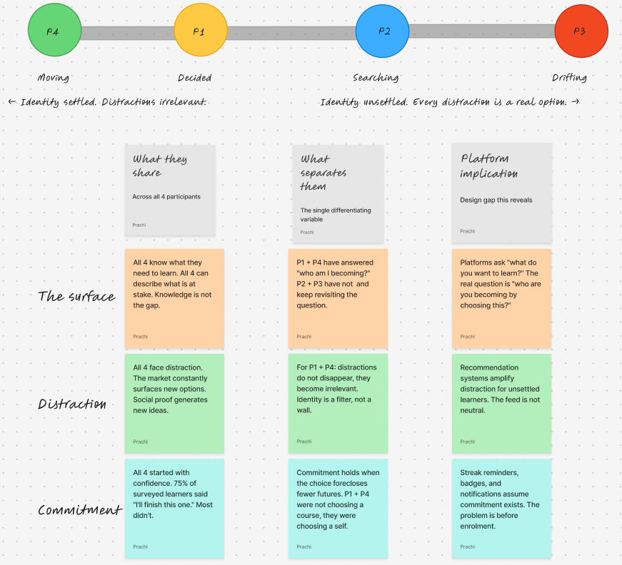
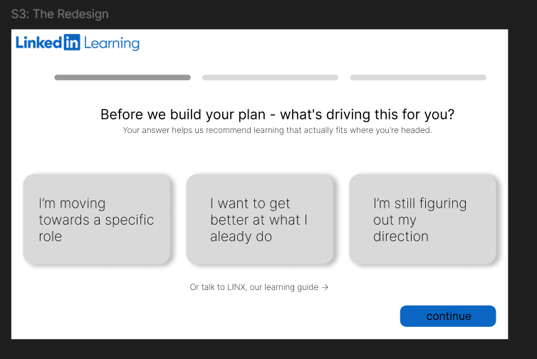

The LINX story: from a survey finding to a B2B product.
Most case studies show you a screen. This one shows you the whole chain of reasoning — a research finding that became a product thesis, a consumer redesign, and an enterprise extension. Read it in order. It's the closest thing to watching me work.
Lost in the Learning Loop
An independent mixed-methods study on why career-driven learners abandon what they start. A 20-person survey, four moderated interviews, affinity mapping, four archetypes.
The finding that changed everything: the learning decision is an identity decision in disguise. What separated people who finished from people who drifted wasn't discipline or time : it was clarity about who they were becoming.

LINX — what if onboarding asked a better question?
A redesign of LinkedIn Learning's onboarding built directly on the research. Instead of "what do you want to learn?", LINX asks "who are you becoming by choosing this?" — three identity paths replacing the skill picker, each mapped to an archetype.
The detail I'm proudest of: Commitment Echo re-anchors the learner at Module 2, the exact drift point the research identified. The design choice is the research finding, made tangible.

LINX for Teams — the enterprise extension
The full PM artifact set: a PRD with three personas and 10 MoSCoW-prioritised features, UML use-case and activity diagrams for three actors, an Agile Sprint 1 plan with epics and story points, and an 18-screen interactive prototype for a fictional enterprise client.
Companies spend $1,254 per employee on training; only 8% of CEOs see business impact. The gap isn't budget ~ it's the missing diagnosis. LINX for Teams gives L&D managers the why, not just the completion dashboard.

Before the product decisions, there's the analysis.
I don't hand-wave the numbers. These two are here on purpose; they show I can find a real signal in messy data and turn it into a decision, worth acting upon.
App Review Signal Pipeline
The retention paradox: the most engaged users churned at 8.3%, higher than the 6.0% baseline.
A pipeline that turns raw app-store reviews into engineered retention signals, surfacing a counter-intuitive pattern that flips the usual "engagement = stickiness" assumption — exactly the kind of finding that should change a roadmap.
Ongoing · details + repo landing soonLabor Market Strategic Framework
Hiring in Healthcare is 2.3× harder than Construction : a $50M expansion decision in one number.
126 months of Bureau of Labor Statistics data turned into three custom metrics (Talent Acquisition Pressure, Investment Risk Score, Shortage Classification) and an interactive simulator that answers "where can you actually hire?"
- 2018MA, EconomicsLearning to interpret what data means, not just what it says.
- 2019–22GlobalData : Economic ResearcherInvestor-facing country reports; PESTLE across 90+ economies; data provenance.
- 2022–23Deloitte USI : Data Management AnalystClient data on Informatica + Salesforce; first hands-on SQL; Power BI dashboards.
- 2024–26MBA, Business Analytics : Pace UniversityPython, the business lens, and the room to start building, not just reporting.
- 2025StoriedData : Product internshipUser testing and dashboards inside a live BI product. First real product exposure.
I'm someone analytical enough to trust the numbers and human enough to ask why they look that way.
I spent four years getting good at reading business problems in data. The MBA taught me to build strategy around them. But the question that kept pulling me forward wasn't "what does the data say?" — it was "why do people do what they do?"
That's the loop I want to run inside a product team: start with research, end with something buildable. I built this site the same way, gathered what I needed, built what I meant, figured it out as I went.
Looking for an APM or product role where research and rigor both matter.
If you're building something where the hard part is understanding people and proving it with data. I'd love to talk.
prachigpt113@gmail.com →